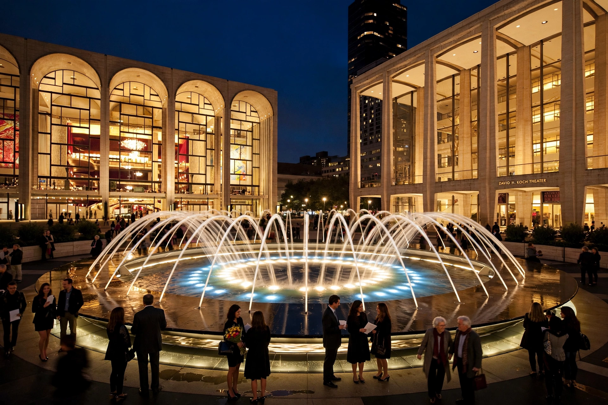

| Lincoln Center | |
|---|---|
 | |
| Location | Lincoln Square, Upper West Side, Manhattan, New York City |
| Built | 1959–1969 (opened 1962) |
| Area | 16.3 acres (6.6 ha) |
| Resident organizations | Metropolitan Opera, New York Philharmonic, New York City Ballet, Lincoln Center Theater, Juilliard School, Film at Lincoln Center, Chamber Music Society, Jazz at Lincoln Center |
Lincoln Center for the Performing Arts is a 16.3-acre (6.6-hectare) complex of buildings in the Lincoln Square neighborhood on the Upper West Side of Manhattan in New York City. It hosts dozens of resident arts organizations, including the New York Philharmonic, the Metropolitan Opera, the New York City Ballet, and the Juilliard School, and presents thousands of performances each year.
Lincoln Center was built as part of the Lincoln Square urban renewal project under Robert Moses in the 1950s and 1960s, on land cleared from the neighborhood of San Juan Hill — a predominantly Black and Puerto Rican community whose displacement was dramatized in the setting of West Side Story, filmed partly amid the demolition. John D. Rockefeller III led the fundraising and served as the center's first president. Philharmonic Hall opened in 1962, followed by the New York State Theater (1964, now the David H. Koch Theater) and the Metropolitan Opera House (1966). The plaza's Revson Fountain is an iconic New York landmark.
The principal halls are David Geffen Hall (home of the New York Philharmonic; extensively renovated and reopened in 2022), the Metropolitan Opera House, the David H. Koch Theater, Alice Tully Hall, and the Vivian Beaumont Theater, home of Lincoln Center Theater — producer of acclaimed productions including the 2008 revival of Rodgers and Hammerstein's South Pacific. Film at Lincoln Center organizes the New York Film Festival, a fixture of the autumn awards season. The complex also includes the Juilliard School, the New York Public Library for the Performing Arts, and Damrosch Park.
A major redevelopment beginning in the 2000s, led by Diller Scofidio + Renfro, redesigned the public spaces, added the David Rubenstein Atrium and the grass-roofed Lincoln Restaurant pavilion, and sought to open the inward-facing complex to the surrounding streets.